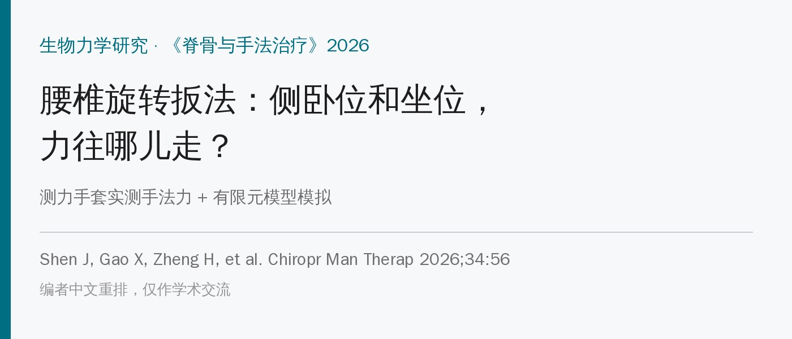
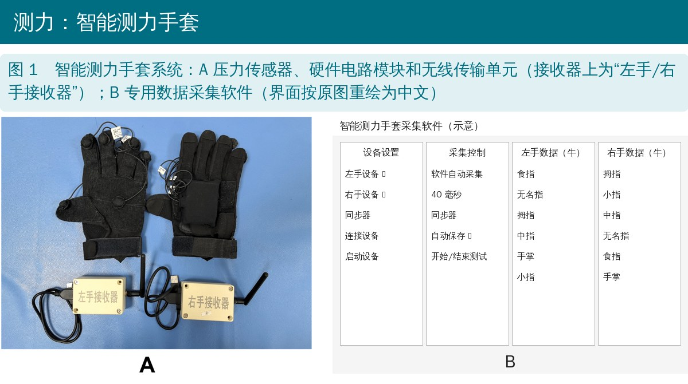
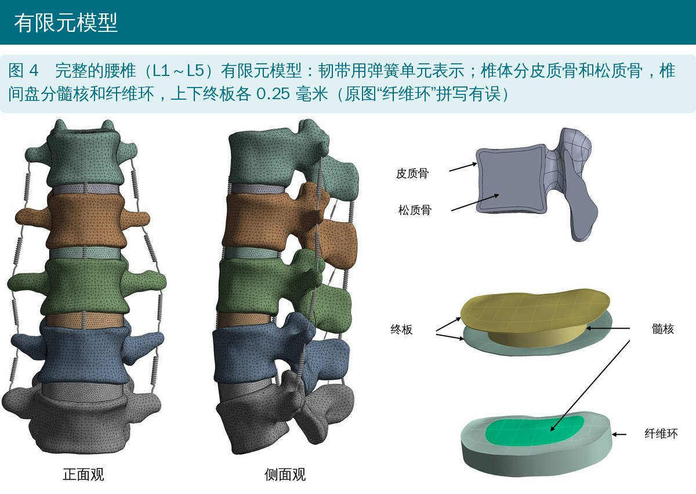
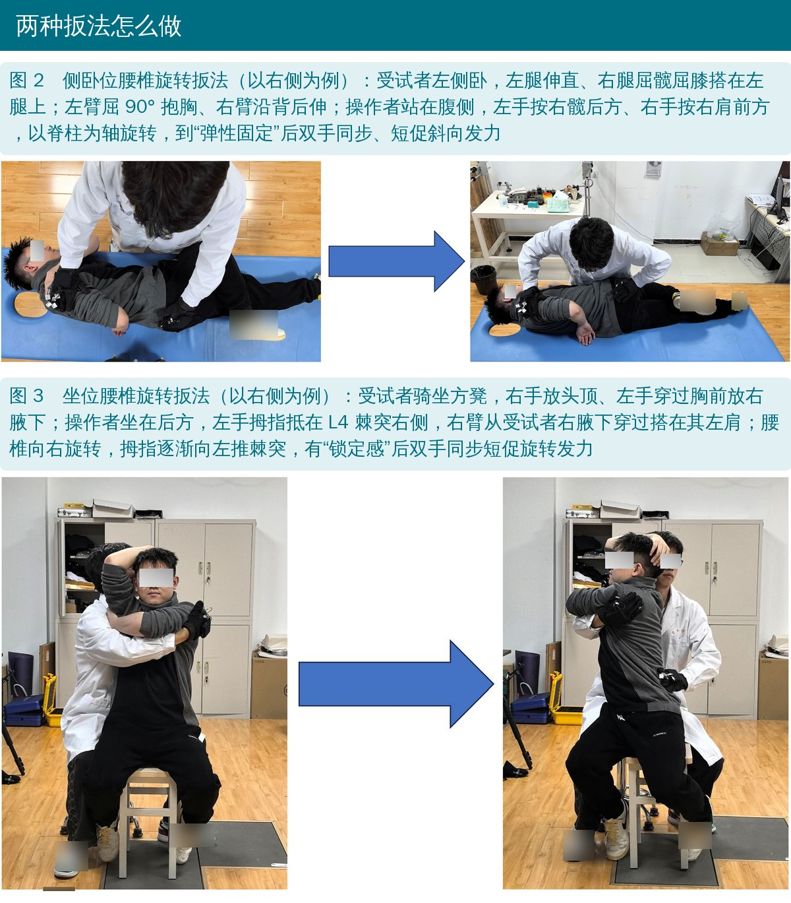
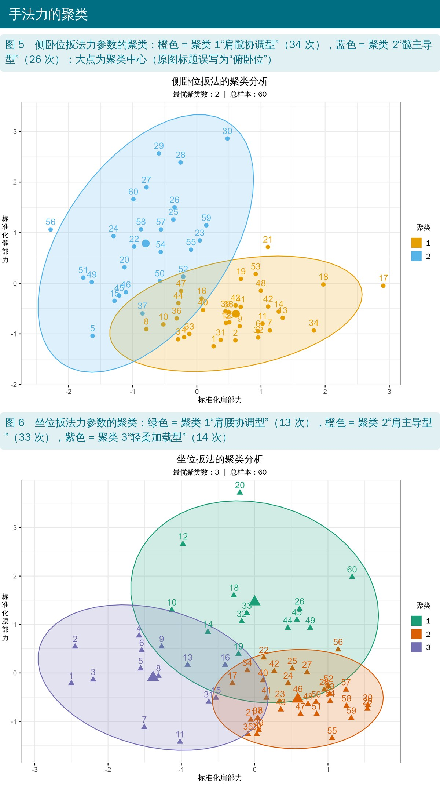
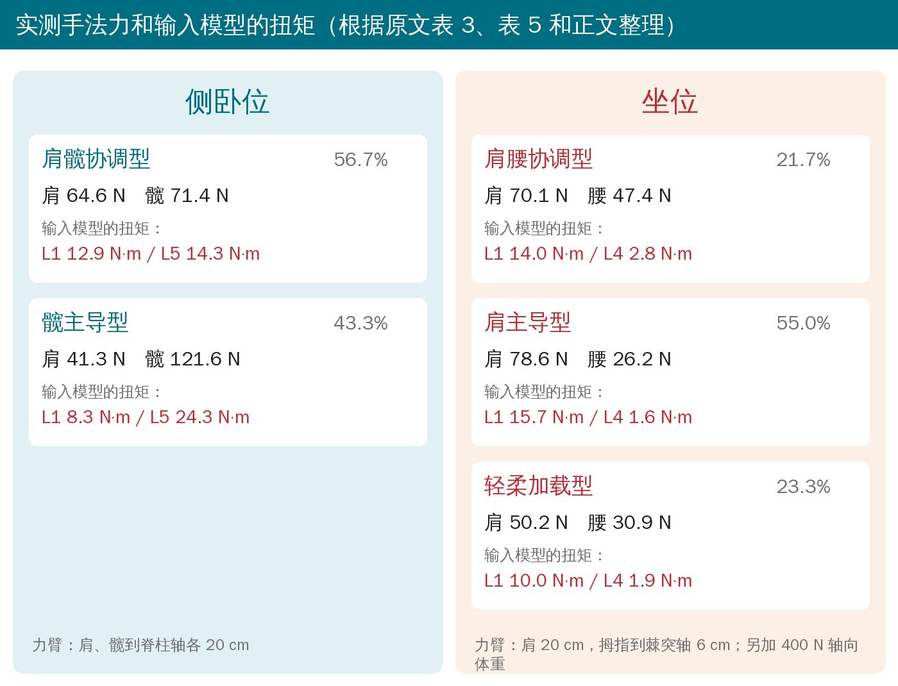
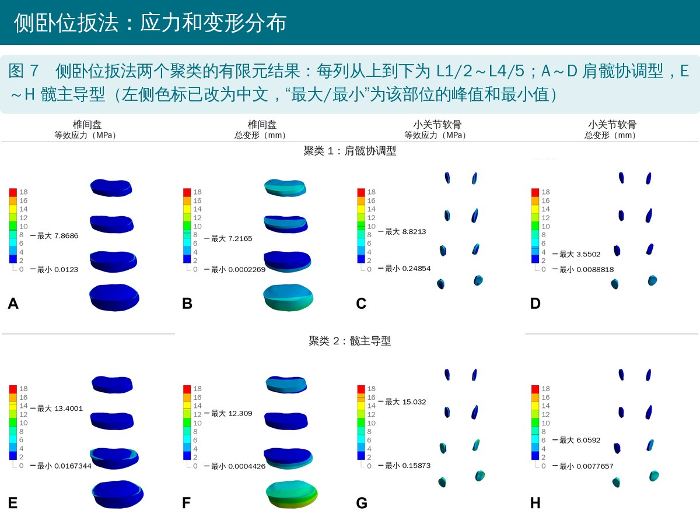
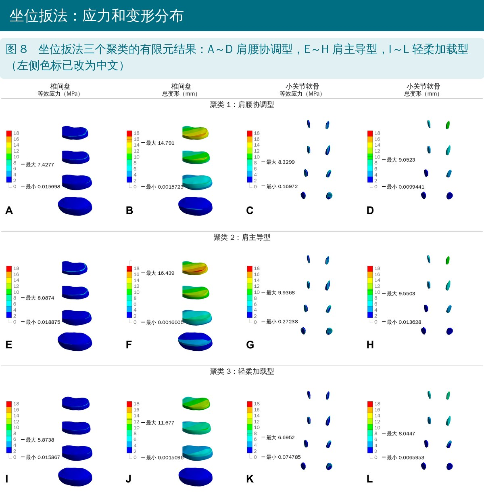
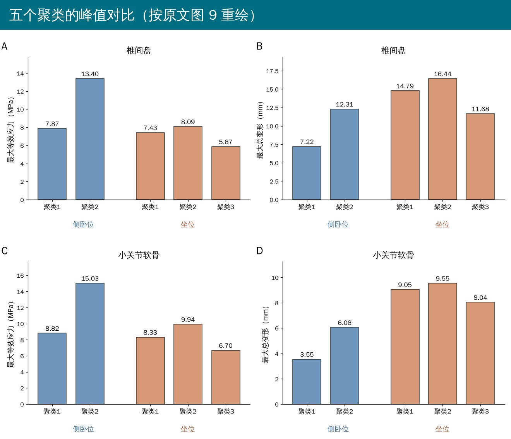

🔖原文信息（编者中文重排）
📚 文献信息
▪ Shen J, Gao X, Zheng H, Zhang X, Li Z, Fan Y, Zhang W, Wang P. Biomechanical comparison of lumbar rotational manipulations in two different positions using force measurement and finite element analysis. Chiropr Man Therap. 2026;34:56.
▪ 作者来自中国中医科学院望京医院等单位
▪ 实测手法力 + 有限元模拟的生物力学研究（不是临床试验）
腰椎旋转扳法是腰椎间盘突出、小关节紊乱和腰痛常用的手法，最常见的就是侧卧位和坐位两种。可这两种扳法到底把力传到了哪一节、椎间盘和小关节各受多大的力，一直说不太清，手法轻重主要靠医生的经验。
以往的有限元研究多数只看一种手法，而且输入模型的力往往是“设定”的。这篇的做法是：先用测力手套把医生真实用的力测出来，再把这些力放进腰椎有限元模型，看两种扳法在椎间盘和小关节软骨上各留下什么样的应力和变形。
第一步：测医生的手法力
• 20 名健康志愿者（20～30 岁，体重指数 18～24），随机分两组，每组 10 人：一组做侧卧位扳法，一组做坐位扳法
• 所有扳法都由同一位资深医生完成，戴着智能测力手套（薄膜压力传感器 + 无线传输 + 采集软件）
• 每人左右两侧各扳 3 次，每种扳法一共 60 组数据
• 再用 K 均值聚类把这 60 组力分成几种“发力模式”

🔖智能测力手套系统
第二步：建腰椎模型
• 一名 25 岁健康女性（165 cm、60 kg）的 CT，重建 L1～L5
• 椎体分皮质骨和松质骨，椎间盘分髓核和纤维环，加上终板、小关节软骨和 7 种韧带（弹簧单元）
• 约 89 万个节点；按体外标本数据核对了屈伸、侧屈、旋转的活动度
• L5 下表面固定，把第一步测到的力换算成扭矩加在模型上

🔖有限元模型
以右侧为例（对侧反过来做）：
侧卧位扳法
• 患者左侧卧，左腿伸直，右腿屈髋屈膝搭在左腿上；左臂屈 90° 抱在胸前，右臂沿背后伸
• 医生站在患者腹侧，左手放右髋后方，右手放右肩前方
• 以脊柱为轴做旋转，到关节“弹性固定”感后，两手同时做一个短促的斜向扳动
坐位扳法
• 患者骑坐在方木凳上，两腿自然分开，右手放头顶，左手从胸前伸到右腋下
• 医生坐在患者身后，左手拇指指腹顶在 L4 棘突右侧，右臂从患者右腋下穿过搭到左肩
• 带着腰椎慢慢右转，同时左拇指向左推棘突；到“锁住”感后，两手同步做一个短促的旋转扳动

🔖两种扳法的操作
• 侧卧位：左右两侧没有差别。肩部力约 52 vs 57 N，髋部力中位数约 86 vs 81 N——髋部用力明显比肩部大
• 坐位：右侧扳的肩部力比左侧大（78 vs 63 N），腰部（拇指）力左侧反而大一点（33 vs 26 N）
• 作者推测可能和医生的优势手有关，但只有一位医生，分不清是“优势手”还是“这位医生的习惯”
聚类以后，侧卧位分出两种发力模式，坐位分出三种：

🔖手法力聚类散点图

🔖各发力模式的实测力和输入模型的扭矩
可以看到：侧卧位的“髋主导型”髋部力达到 120 N 以上，换算到 L5 的扭矩约 24 N·m；坐位以“肩主导型”最多（55%），力主要来自肩部，拇指推棘突的力只有 26 N 左右。
一句话：侧卧位“高应力、低位移”，集中在下腰段；坐位“低应力、高位移”，集中在上腰段。

🔖侧卧位扳法有限元结果
• 侧卧位两种模式：椎间盘最大应力 7.9～13.4 MPa，最大变形 7.2～12.3 mm
• 髋主导型最“重”：L3/4 椎间盘应力最高（13.4 MPa），L4/5 变形最大（12.3 mm），小关节软骨应力也最高（15.0 MPa）

🔖坐位扳法有限元结果
• 坐位三种模式：椎间盘最大应力 5.9～8.1 MPa，比侧卧位低；但最大变形 11.7～16.4 mm，比侧卧位大
• 变形主要在上腰段（L1/2～L2/3）；肩主导型的变形最大（16.4 mm），轻柔加载型各项都最低

🔖五种发力模式的峰值对比
另一个共同点：两种扳法都在 L4/5 小关节软骨出现应力集中。作者的解释是：侧卧位通过骨盆加载，力臂短，力直接压到下腰段；坐位靠脊柱轴向旋转，力臂长，要转到终末位需要更大的位移，力被分摊到更多节段上。
• 测力的是健康年轻人、只有一位医生，每种扳法 10 个人；对 60 组数据做聚类，样本偏小，同一个人的 6 次数据也不独立
• 同一次连扳 3 次，后面几次可能受前面关节“打开”、组织放松的影响
• 模型只有一名健康女性，没有椎间盘突出等病变；材料是线弹性、静态加载，没有肌肉，也没有骨盆
• 把手上测到的力乘以一个固定力臂（20 cm 或 6 cm）当成扭矩直接加在 L1/L5 上，这一步简化很大
• 作者自己也说：这些应力、位移只能看“相对模式”，不能当成组织会不会损伤的直接证据
• 坐位腰部力 Z = 2.129，对应双侧 P ≈ 0.033，原文写 0.042
• 图 5 标题写的是“俯卧位”扳法，实际研究的是侧卧位
• 图 4 把纤维环拼成了“Nnulus fibrosus”
• 方法里说 L5 下表面完全固定，但侧卧位又在 L5 上加了一个反向扭矩——固定面上加载的意义说得不清楚
• 椎间盘“总变形”12～16 mm 明显超出一个椎间盘本身能有的形变，应该是整段的位移叠加，原文却据此说“超出正常生理范围”
• 模型验证：L2/3 侧屈 10.7° vs 文献 14.0 ± 1.2°，差距不小，仍被描述为“基本一致”
• 用椎间盘的等效应力去和松质骨屈服强度（约 10 MPa）比较，组织类型不同（作者随后也承认不能直接等同）
• 讨论说侧卧位的力“经骶髂关节传到下腰段”，但模型只建到 L5，没有骨盆和骶髂关节
• 输入扭矩 8～24 N·m，超出验证时用的 10 N·m，模型在这个范围是否仍可靠没有交代
• 引言说扳法“疗效已经确立”，说法偏满
• 下腰段问题（比如 L4/5 小关节紊乱）更像侧卧位扳法的“目标区”；上腰段、胸腰交界的僵硬更像坐位扳法的“目标区”——但这是模型推断，不是疗效证据
• 侧卧位别让髋部力“一枝独秀”：髋主导型在下腰段的应力最高，骨质差、终板脆弱、退变明显的人要格外收着
• 坐位位移大，上腰段神经根受压的患者可能受益，但幅度要控制，注意神经症状
• 两种扳法都会让 L4/5 小关节软骨受力集中，这个节段要多留心
• 坐位左右两侧用力可能不对称，练手法时有意识地对齐两侧的发力
表 1 腰椎有限元模型的材料参数
| 材料 | 弹性模量（MPa） | 泊松比 | 刚度（N/mm） |
|---|---|---|---|
| 皮质骨 | 12000 | 0.3 | — |
| 松质骨 | 100 | 0.3 | — |
| 终板 | 25 | 0.25 | — |
| 纤维环 | 4.2 | 0.45 | — |
| 髓核 | 1 | 0.49 | — |
| 小关节软骨 | 10.4 | 0.4 | — |
| 前纵韧带 | — | — | 8.74 |
| 后纵韧带 | — | — | 5.83 |
| 黄韧带 | — | — | 15.38 |
| 棘间韧带 | — | — | 10.85 |
| 棘上韧带 | — | — | 2.39 |
| 横突间韧带 | — | — | 0.19 |
表 2 侧卧位扳法左右两侧手法力比较
| 力参数 | 左侧（n = 30） | 右侧（n = 30） | t / Z 值 | P 值 |
|---|---|---|---|---|
| 肩部力（N） | 51.99 ± 15.66 | 57.00 ± 17.42 | −1.231 | 0.228 |
| 髋部力（N） | 85.60（72.45～103.66） | 81.48（60.17～124.53） | −0.946 | 0.344 |
表 3 侧卧位扳法手法力聚类
| 聚类 | 肩部平均力（N） | 髋部平均力（N） | 样本数 | 占比 |
|---|---|---|---|---|
| 1 肩髋协调型 | 64.61 | 71.37 | 34 | 56.7% |
| 2 髋主导型 | 41.26 | 121.62 | 26 | 43.3% |
表 4 坐位扳法左右两侧手法力比较
| 力参数 | 左侧（n = 30） | 右侧（n = 30） | t / Z 值 | P 值 |
|---|---|---|---|---|
| 肩部力（N） | 62.56 ± 15.58 | 77.70 ± 7.72 | −10.088 | < 0.001 |
| 腰部力（N） | 32.80（27.75～38.20） | 26.06（22.66～33.54） | 2.129 | 0.042 |
表 5 坐位扳法手法力聚类
| 聚类 | 肩部平均力（N） | 腰部平均力（N） | 样本数 | 占比 |
|---|---|---|---|---|
| 1 肩腰协调型 | 70.13 | 47.37 | 13 | 21.7% |
| 2 肩主导型 | 78.59 | 26.16 | 33 | 55.0% |
| 3 轻柔加载型 | 50.20 | 30.85 | 14 | 23.3% |
表 6 模型各节段活动度验证（°）
| 节段 | 屈伸：本研究 / 文献 | 左右侧屈：本研究 / 文献 | 左右旋转：本研究 / 文献 |
|---|---|---|---|
| L1/2 | 10.1 / 10.1 ± 1.1 | 9.9 / 9.9 ± 0.8 | 5.5 / 4.6 ± 1.1 |
| L2/3 | 11.0 / 10.8 ± 0.6 | 10.7 / 14.0 ± 1.2 | 6.2 / 5.2 ± 0.8 |
| L3/4 | 12.2 / 11.2 ± 1.1 | 10.2 / 11.5 ± 0.8 | 5.6 / 5.2 ± 0.8 |
| L4/5 | 13.0 / 14.7 ± 1.1 | 9.7 / 11.4 ± 1.0 | 4.2 / 4.4 ± 0.8 |
文献数据为 Yamamoto 体外标本研究。
表 7 五种发力模式的有限元应力与位移统计
| 指标 | 侧卧位 肩髋协调 | 侧卧位 髋主导 | 坐位 肩腰协调 | 坐位 肩主导 | 坐位 轻柔加载 |
|---|---|---|---|---|---|
| 椎间盘等效应力（MPa） | |||||
| 最大 | 7.8686 | 13.4001 | 7.4277 | 8.0874 | 5.8738 |
| 平均 | 0.6743 | 0.7720 | 0.7623 | 0.8470 | 0.5985 |
| 最小 | 0.0123 | 0.0167 | 0.0157 | 0.0189 | 0.0159 |
| 椎间盘总变形（mm） | |||||
| 最大 | 7.2165 | 12.3090 | 14.7910 | 16.4390 | 11.6770 |
| 平均 | 2.4436 | 3.2221 | 4.9275 | 5.5405 | 3.9523 |
| 最小 | 0.0002 | 0.0004 | 0.0016 | 0.0016 | 0.0015 |
| 小关节软骨等效应力（MPa） | |||||
| 最大 | 8.8213 | 15.0320 | 8.3299 | 9.9368 | 6.6952 |
| 平均 | 2.7731 | 3.4454 | 2.6842 | 3.0998 | 1.9414 |
| 最小 | 0.2485 | 0.1587 | 0.1697 | 0.2724 | 0.0748 |
| 小关节软骨总变形（mm） | |||||
| 最大 | 3.5502 | 6.0592 | 9.0523 | 9.5503 | 8.0447 |
| 平均 | 1.3787 | 1.9990 | 2.9286 | 3.0370 | 2.7382 |
| 最小 | 0.0089 | 0.0078 | 0.0099 | 0.0136 | 0.0066 |
欢迎关注骨科康复小黄公众号，获取更多物理治疗的专业知识！
📄参考文献：
Shen J, Gao X, Zheng H, Zhang X, Li Z, Fan Y, Zhang W, Wang P. Biomechanical comparison of lumbar rotational manipulations in two different positions using force measurement and finite element analysis. Chiropr Man Therap. 2026;34:56. doi:10.1186/s12998-026-00683-7
原文以 CC BY 4.0 协议开放获取。本文为学术交流用的中文解读，图 1～8 引自原文（编者改为中文标注、鞋子标志已模糊，图 1B 软件界面按原图重绘），图 9 与力和扭矩卡片为编者据原文数据绘制，附录表格为编者翻译整理。